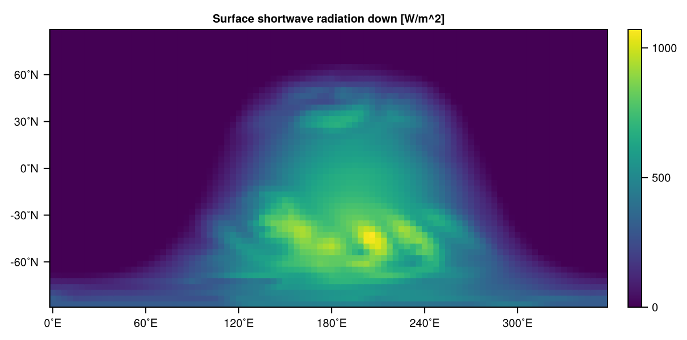
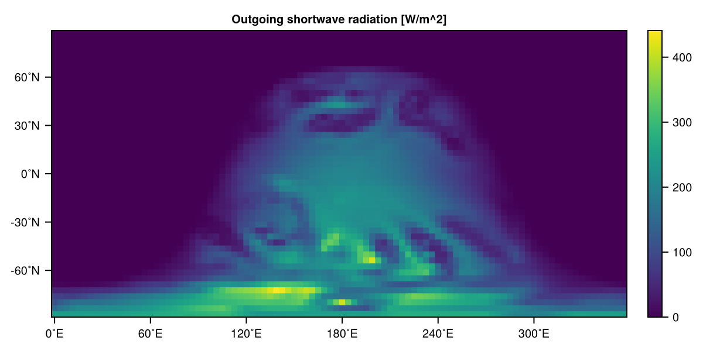
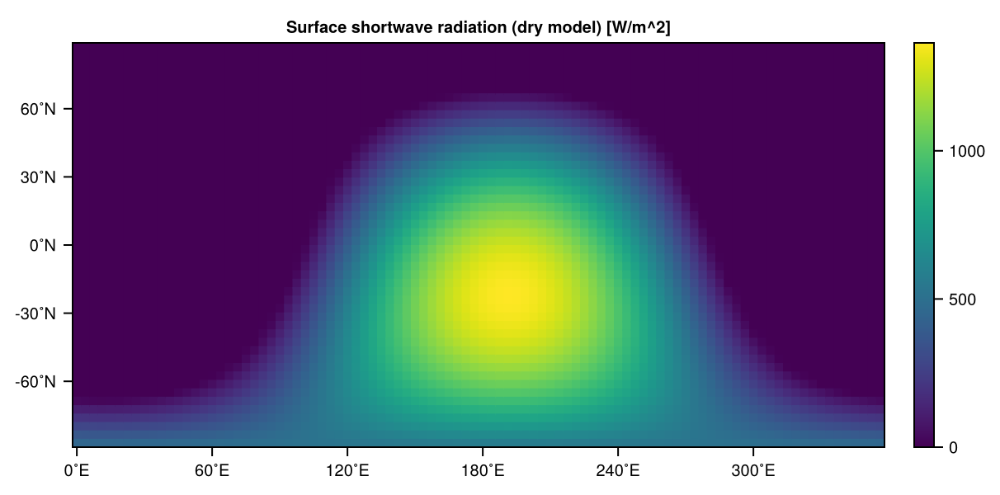
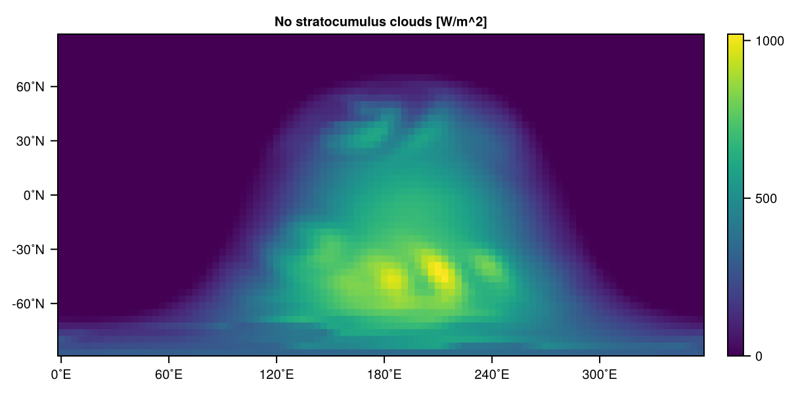

Radiation
Longwave radiation implementations
Currently implemented is
using SpeedyWeather
subtypes(SpeedyWeather.AbstractLongwave)5-element Vector{Any}:
JeevanjeeRadiation
OneBandLongwave
SpeedyWeather.AbstractLongwaveRadiativeTransfer
SpeedyWeather.AbstractLongwaveTransmissivity
UniformCoolingUniform cooling
Following Paulius and Garner[PG06], the uniform cooling of the atmosphere is defined as
\[\frac{\partial T}{\partial t} = \begin{cases} - \tau^{-1}\quad&\text{for}\quad T > T_{min} \\ \frac{T_{strat} - T}{\tau_{strat}} \quad &\text{else.} \end{cases}\]
with $\tau = 16~h$ resulting in a cooling of -1.5K/day for most of the atmosphere, except below temperatures of $T_{min} = 207.5~K$ in the stratosphere where a relaxation towards $T_{strat} = 200~K$ with a time scale of $\tau_{strat} = 5~days$ is present.
Jeevanjee radiation
Jeevanjee and Zhou [JZ22] (eq. 2) define a longwave radiative flux $F$ for atmospheric cooling as (following Seeley and Wordsworth [SW23], eq. 1)
\[\frac{dF}{dT} = α (T_t - T)\]
The flux $F$ (in $W/m^2/K$) is a vertical upward flux between two layers (vertically adjacent) of temperature difference $dT$. The change of this flux across layers depends on the temperature $T$ and is a relaxation term towards a prescribed stratospheric temperature $T_t = 200~K$ with a radiative forcing constant $\alpha = 0.025 W/m^2/K^2$. Two layers of identical temperatures $T_1 = T_2$ would have no net flux between them, but a layer below at higher temperature would flux into colder layers above as long as its temperature $T > T_t$. This flux is applied above the lowermost layer and above, leaving the surface fluxes unchanged. The uppermost layer is tied to $T_t$ through a relaxation at time scale $\tau = 6~h$
\[\frac{\partial T}{\partial t} = \frac{T_t - T}{\tau}\]
The flux $F$ is converted to temperature tendencies at layer $k$ via
\[\frac{\partial T_k}{\partial t} = (F_{k+1/2} - F_{k-1/2})\frac{g}{\Delta p c_p}\]
The term in parentheses is the absorbed flux in layer $k$ of the upward flux from below at interface $k+1/2$ ($k$ increases downwards, see Vertical coordinates and resolution and Sigma coordinates). $\Delta p = p_{k+1/2} - p_{k-1/2}$ is the pressure thickness of layer $k$, gravity $g$ and heat capacity $c_p$.
OneBandLongwave
Solves the standard two-stream approximation to calculate longwave radiative fluxes up $U$ and down $D$ following Frierson et al. 2006 [FH06].
\[\frac{dU}{d\tau} = (U - B), \qquad \frac{dD}{d\tau} = (B - D)\]
using optical depth $\tau$ as vertical coordinate. Longwave emittance is $\sigma T^4$ following Stefan-Boltzmann with emittance of 1. Boundary conditions are $U = \sigma T_s^4$ at the surface, i.e. the surface emitting with its surface temperature $T_s$ (sea surface temperature, skin or soil temperature); and $D = 0$ at the top (no longwave radiation from space). Instead of optical depth we solve these equations using the transmissivity $t = \exp(-\tau)$.
\[U_{k-1} = t_k U_k + (1-t_k) σ T_k^4\]
such that the upward flux $U_k$ of layer $k$ is reduced by transmissivity $t_k$ of that layer but increased by longwave emittance going up. Similarly on the downwards pass
\[D_{k+1} = t_k D_k + (1-t_k) σ T_k^4\]
Note that the sign change in the differential formulation with optical depth only occurs because the optical depth as vertical coordinate strictly increases towards the surface.
To be used like (currently the default anyway)
spectral_grid = SpectralGrid()
longwave_radiation = OneBandLongwave(spectral_grid)
model = PrimitiveWetModel(spectral_grid; longwave_radiation)
model.longwave_radiationOneBandLongwave <: AbstractLongwave
├ transmissivity: FriersonLongwaveTransmissivity{Float32}
└ radiative_transfer: OneBandLongwaveRadiativeTransfer{Float32}The transmissivity is defined as in Frierson et al. 2006 [FH06] using the following parameters
FriersonLongwaveTransmissivity(spectral_grid)FriersonLongwaveTransmissivity{Float32} <: SpeedyWeather.AbstractLongwaveTransmissivity
├ τ₀_equator::Float32 = 6.0
├ τ₀_pole::Float32 = 1.5
└ fₗ::Float32 = 0.1to compute
\[\tau_0 = \tau_{0e} + (\tau_{0p} - \tau_{0e}) \sin^2 \theta\]
with surface values of optical depth at the equator $\tau_{0e}$ and at the poles $\tau_{0p}$ and a transition in between with latitude $\theta$. Then the optical depth changes in the vertical as
\[\tau = \tau_0 \left[ f_l \left( \frac{p}{p_s} \right) + (1 - f_l) \left( \frac{p}{p_s} \right)^4 \right]\]
For details see Frierson et al. 2006 [FH06].
Shortwave radiation
Currently implemented schemes:
using SpeedyWeather
subtypes(SpeedyWeather.AbstractShortwave)5-element Vector{Any}:
OneBandShortwave
SpeedyWeather.AbstractShortwaveClouds
SpeedyWeather.AbstractShortwaveRadiativeTransfer
SpeedyWeather.AbstractShortwaveTransmissivity
TransparentShortwaveOneBandShortwave: Single-band shortwave radiation with diagnostic clouds
The OneBandShortwave scheme provides a single-band (broadband) shortwave radiation parameterization, including diagnostic cloud effects following [KMB06]. For dry models without water vapor, use OneBandGreyShortwave instead, which automatically disables cloud effects and uses transparent transmissivity $t=1$.
Key differences:
OneBandShortwave: Includes diagnostic clouds, water vapor absorption, and atmospheric transmissivity effects (for wet models)OneBandGreyShortwave: No clouds, transparent atmosphere (for dry models)
Cloud diagnosis: Cloud properties are diagnosed from the relative humidity and total precipitation in the atmospheric column. The cloud base is set at the interface between the lowest two model layers, and the cloud top is the highest layer where both
\[\mathrm{RH}_k > \mathrm{RH}_{cl} \quad \text{and} \quad Q_k > Q_{cl}\]
are satisfied. The cloud cover (CLC) in a layer is then given by
\[\mathrm{CLC} = \min\left[1,\ w_{pcl} \sqrt{\min(p_{mcl}, P_{lsc} + P_{cnv})}+ \min\left(1, \left(\frac{\mathrm{RH}_k - \mathrm{RH}_{cl}}{\mathrm{RH}'_{cl} - \mathrm{RH}_{cl}}\right)^2\right)\right]\]
where $w_{pcl}$ and $p_{mcl}$ are parameters, $P_{lsc}$ and $P_{cnv}$ are large-scale and convective precipitation, and $\mathrm{RH}_{cl}$ is a threshold.
Stratocumulus clouds: Stratocumulus cloud cover over oceans is parameterized based on boundary layer static stability (GSEN):
\[\mathrm{CLS} = F_{ST} \max(\mathrm{CLS}_{\max} - \mathrm{CLC}, 0)\]
with
\[F_{ST} = \max\left(0, \min\left(1, \frac{\mathrm{GSE}_N - \mathrm{GSES}_0}{\mathrm{GSES}_1 - \mathrm{GSES}_0}\right)\right)\]
Over land, the stratocumulus cover $\mathrm{CLS}$ is further modified to be proportional to the surface relative humidity:
\[\mathrm{CLS}_L = \mathrm{CLS} \cdot \mathrm{RH}_N\]
where $\mathrm{RH}_N$ is the surface (lowest model layer) relative humidity.
Radiative transfer: The incoming solar flux at the top of the atmosphere is computed from astronomical formulae. Ozone absorption in the lower and upper stratosphere is subtracted, yielding the downward flux into the first model layer:
\[F_{h}^{\downarrow, SR} = F_{0}^{\downarrow, sol} - \Delta F_{ust}^{ozone} - \Delta F_{lst}^{ozone}\]
Shortwave radiation is then propagated downward through each layer using a transmissivity $\tau_{k}^{SR}$, which depends on zenith angle, layer depth, humidity, and cloud properties:
\[F_{k+h}^{\downarrow, SR} = F_{k-h}^{\downarrow, SR} \, \tau_k^{SR}\]
In the cloud-top layer, cloud reflection is included:
\[F_{k+h}^{\downarrow, SR} = F_{k-h}^{\downarrow, SR} (1 - A_{cl} \, \mathrm{CLC}) \, \tau_{k}^{SR}\]
At the surface, stratocumulus reflection and surface albedo are applied:
\[F_{N+h}^{\downarrow, SR} = F_{N-h}^{\downarrow, SR} (1 - A_{cls} \, \mathrm{CLS}) \, \tau_{N}^{SR}\]
The upward flux at the surface is
\[F_{s}^{\uparrow, SR} = F_{s}^{\downarrow, SR} \, A_s\]
and is propagated upward as
\[F_{k-h}^{\uparrow, SR} = F_{k+h}^{\uparrow, SR} \, \tau_{k}^{SR}\]
with cloud reflection added at the cloud-top layer. The upward part is only modeled for the visible band, as near-infrared is mostly absorbed downward.
Key features:
- Single-band (broadband) shortwave radiative transfer
- Cloud reflection and absorption parameterized using diagnosed cloud cover
- Surface albedo can vary between land and ocean
- Top-of-atmosphere insolation set by the solar constant and zenith angle
- Designed for use in idealized and moist atmospheric simulations
Usage
To use the OneBandShortwave scheme, construct your model as follows and run as usual.
For wet models (with water vapor and clouds):
using SpeedyWeather, CairoMakie
spectral_grid = SpectralGrid(trunc=31, nlayers=8)
model = PrimitiveWetModel(spectral_grid; shortwave_radiation=OneBandShortwave(spectral_grid))
simulation = initialize!(model)
run!(simulation, period=Week(1))
# get surface shortwave radiation down
ssrd = simulation.diagnostic_variables.physics.surface_shortwave_down
heatmap(ssrd,title="Surface shortwave radiation down [W/m^2]")
osr = simulation.diagnostic_variables.physics.outgoing_shortwave
heatmap(osr,title="Outgoing shortwave radiation [W/m^2]")
For dry models (no water vapor or clouds):
Use OneBandGreyShortwave instead, which automatically uses NoClouds and TransparentShortwaveTransmissivity:
using SpeedyWeather, CairoMakie
spectral_grid = SpectralGrid(trunc=31, nlayers=8)
model = PrimitiveDryModel(spectral_grid; shortwave_radiation=OneBandGreyShortwave(spectral_grid))
simulation = initialize!(model)
run!(simulation, period=Week(1))
# The shortwave fluxes can be visualised
ssrd = simulation.diagnostic_variables.physics.surface_shortwave_down
heatmap(ssrd, title="Surface shortwave radiation (dry model) [W/m^2]")
Parameterization options
The OneBandShortwave scheme includes several configurable components:
Cloud schemes
The cloud scheme can be specified when constructing the radiation scheme:
DiagnosticClouds(spectral_grid)(default): Diagnoses clouds from humidity and precipitationNoClouds(spectral_grid): No clouds (used inOneBandGreyShortwave)
Transmissivity schemes
The atmospheric transmissivity can be calculated using:
BackgroundShortwaveTransmissivity(spectral_grid)(default): Fortran SPEEDY-based transmissivity with zenith correction and absorption by aerosols, water vapor, and cloudsTransparentShortwaveTransmissivity(spectral_grid): Transparent atmosphere (used inOneBandGreyShortwave)
BackgroundShortwaveTransmissivity
For each layer $k$, the transmissivity is
\[\tau_k^{SR} = \exp\left(-\mu \, \Delta\sigma_k \, \frac{p_s}{10^5} \, \left[a_{dry} + a_{aer}\,\sigma_k^2 + a_{wv}\,q_k + a_{cl}(q_\mathrm{base})\,\mathrm{CLC}\right]\right)\]
with
- $\mu = 1 + a_{zen}(1-\cos\theta)^{n_{zen}}$ (zenith-path correction; $\theta$ is the zenith angle)
- $\Delta\sigma_k = \sigma_{k+1} - \sigma_k$ from the half-levels in the grid geometry
- $p_s$ the column surface pressure
- $a_{dry}$ dry-air absorptivity (
absorptivity_dry_air) - $a_{aer}$ aerosol absorptivity (
absorptivity_aerosol), scaled by $\sigma_k^2$ whenaerosols = true - $a_{wv}$ water-vapor absorptivity (
absorptivity_water_vapor) times specific humidity $q_k$ - $a_{cl}(q_\mathrm{base}) = \min(a_{cl,base} q_\mathrm{base}, a_{cl,limit})$ cloud absorptivity added below the diagnosed cloud top, scaled by cloud cover $\mathrm{CLC}$
All absorptivity coefficients are per $10^5$ Pa. The resulting $\tau_k^{SR}$ values are computed once per column and reused for both the downward and upward sweeps in OneBandShortwaveRadiativeTransfer.
TransparentShortwaveTransmissivity details
Sets $\tau_k^{SR} = 1$ for all layers and bands, effectively skipping atmospheric attenuation while still computing surface and cloud reflections in the radiative transfer step.
Stratocumulus clouds
The DiagnosticClouds scheme includes a use_stratocumulus flag (default: true) that enables the diagnostic stratocumulus cloud parameterization over oceans:
using SpeedyWeather, CairoMakie
spectral_grid = SpectralGrid()
sw_no_sc = OneBandShortwave(spectral_grid, clouds = DiagnosticClouds(spectral_grid; use_stratocumulus=false))
model = PrimitiveWetModel(spectral_grid; shortwave_radiation=sw_no_sc)
sim = initialize!(model)
run!(sim, period=Day(5))
ssrd = sim.diagnostic_variables.physics.surface_shortwave_down
heatmap(ssrd, title="No stratocumulus clouds [W/m^2]")
References
- PG06Paulius and Garner, 2006. JAS. DOI:10.1175/JAS3705.1
- SW23Seeley, J. T. & Wordsworth, R. D. Moist Convection Is Most Vigorous at Intermediate Atmospheric Humidity. Planet. Sci. J. 4, 34 (2023). DOI:10.3847/PSJ/acb0cb
- JZ22Jeevanjee, N. & Zhou, L. On the Resolution‐Dependence of Anvil Cloud Fraction and Precipitation Efficiency in Radiative‐Convective Equilibrium. J Adv Model Earth Syst 14, e2021MS002759 (2022). DOI:10.1029/2021MS002759
- KMB06Kucharski, F., Molteni, F., & Bracco, A. SPEEDY: A simplified atmospheric general circulation model. ICTP, Trieste, Italy. Appendix A: Model Equations and Parameters (2006). PDF
- FH06Frierson DMW, IM Held, P Zurita-Gotor. A Gray-Radiation Aquaplanet Moist GCM. Part I: Static Stability and Eddy Scale (2006). Journal of the Atmospheric Sciences 63:10. DOI: 10.1175/JAS3753.1